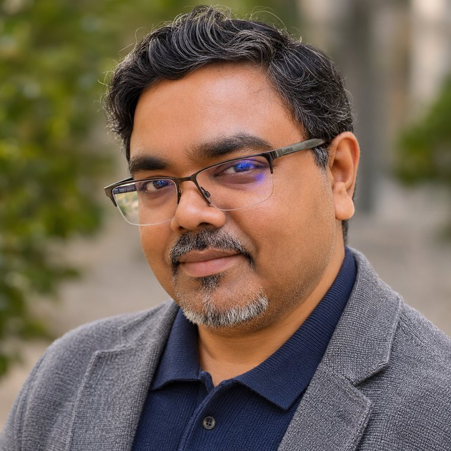
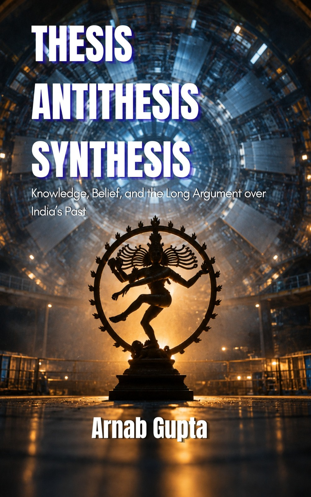
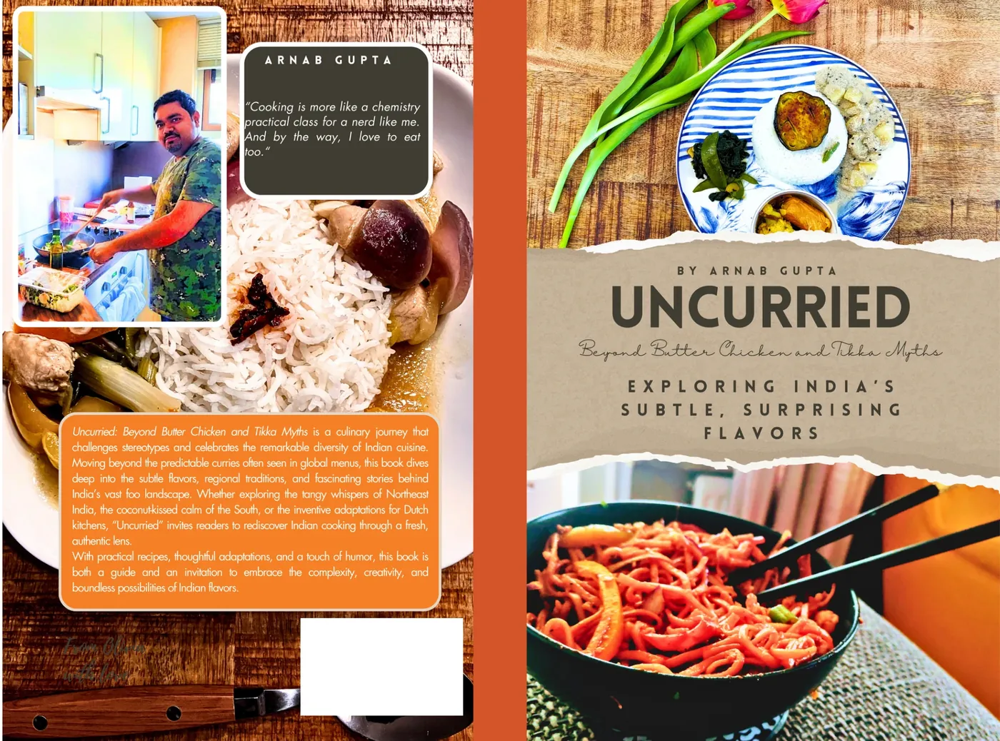
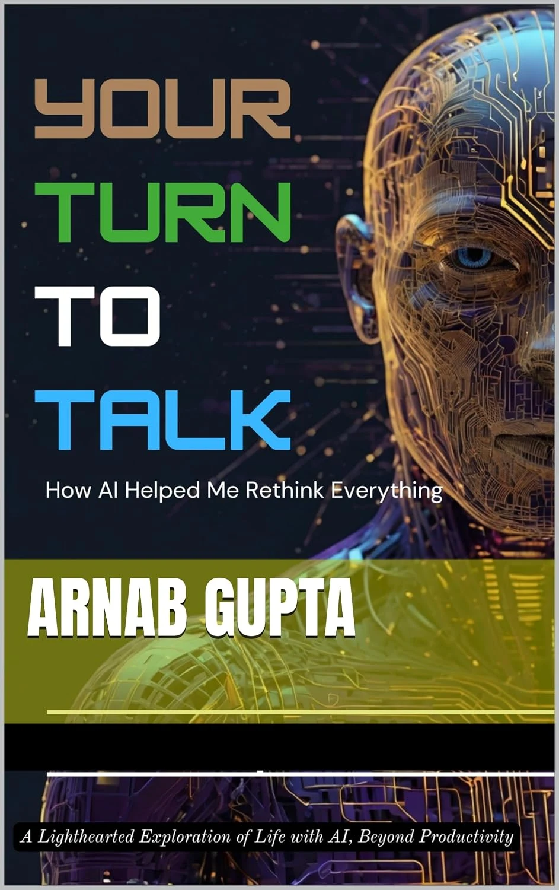

Understanding resilience in Myanmar
Working with partners on a seed system resilience assessment, connecting crop diversity, social networks and field evidence to programme decisions.
Explore the work ↗RESEARCH. INDEPENDENT WRITING. OPEN QUESTIONS.
I work at the intersection of seed systems, digital innovation and responsible data use, helping turn research into tools and decisions that work in practice.
Researcher & Coordinating Data Steward
Social Sciences Group, Wageningen University & Research

How does evidence become useful knowledge? That question runs through my work with seed-sector partners, the digital tools I explore and the stories I write.
More about my approach ↗Working with partners on a seed system resilience assessment, connecting crop diversity, social networks and field evidence to programme decisions.
Explore the work ↗Exploring locally hosted, source-grounded AI prototypes for agricultural advisory services, including multilingual approaches.
Explore the work ↗Supporting researchers with data management, consent, storage and responsible approaches to sensitive information.
Explore the work ↗
Knowledge, Belief, and the Long Argument over India’s Past
Read more & find your edition ↗
Beyond Butter Chicken and Tikka Myths
Explore the book ↗
How AI Helped Me Rethink Everything
Explore the book ↗Research and advisory experience across these countries, bringing seed systems, agricultural diversity and practical information tools into conversation. Each project has its own context and stage of development.
My path runs through IARI, commercial seed enhancement and quality assurance, and research with Bioversity International in India.
Myanmar was an important chapter. In 2018–2019, I was based in Pathein with Welthungerhilfe, managing rice seed sector development in the Ayeyarwady Delta. Seed laboratories, quality systems, digital logistics and training connected the science with everyday sector decisions.
At WUR since 2019, first at the Wageningen Centre for Development Innovation and since 2023 at Wageningen Social and Economic Research, I work on resilient seed systems, locally hosted AI advisory and research data stewardship.
Read my story →Notes and essays on seeds, systems and the world around us.
Loading the latest articles…
Writing on seed systems, AI, history, food and the questions that keep me curious.